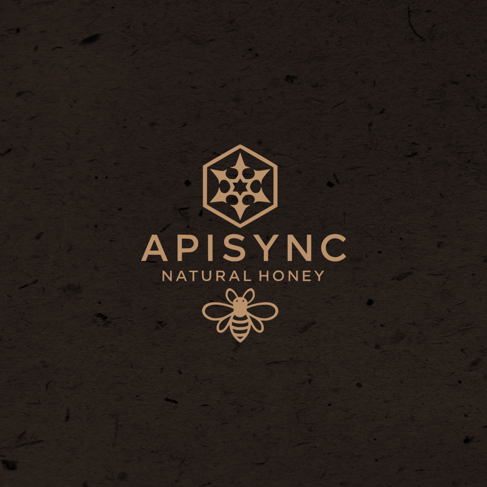
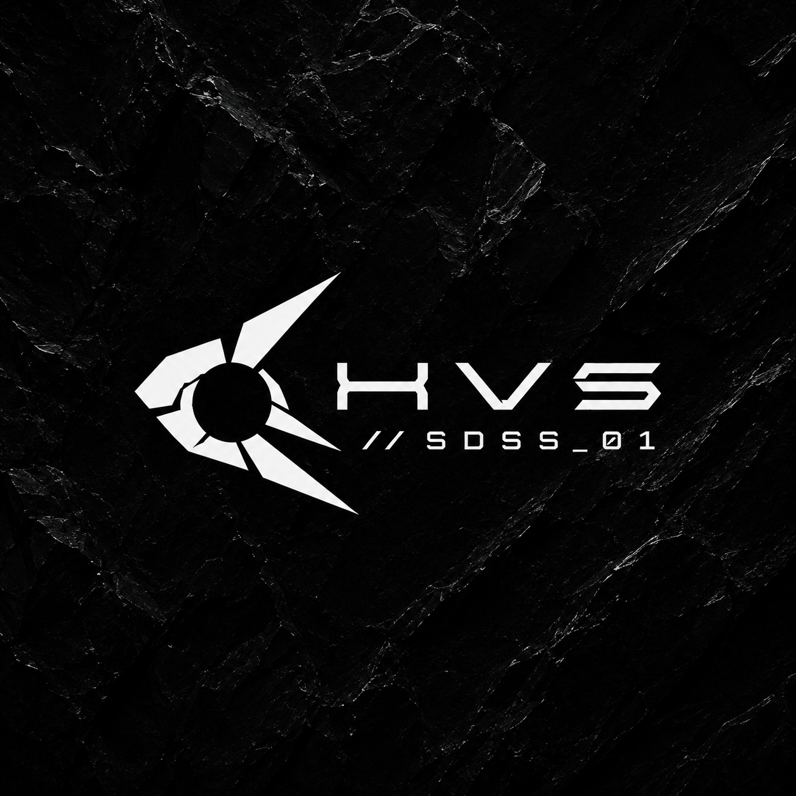
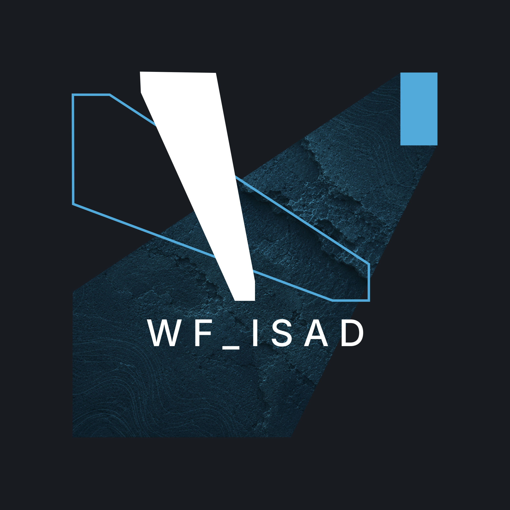
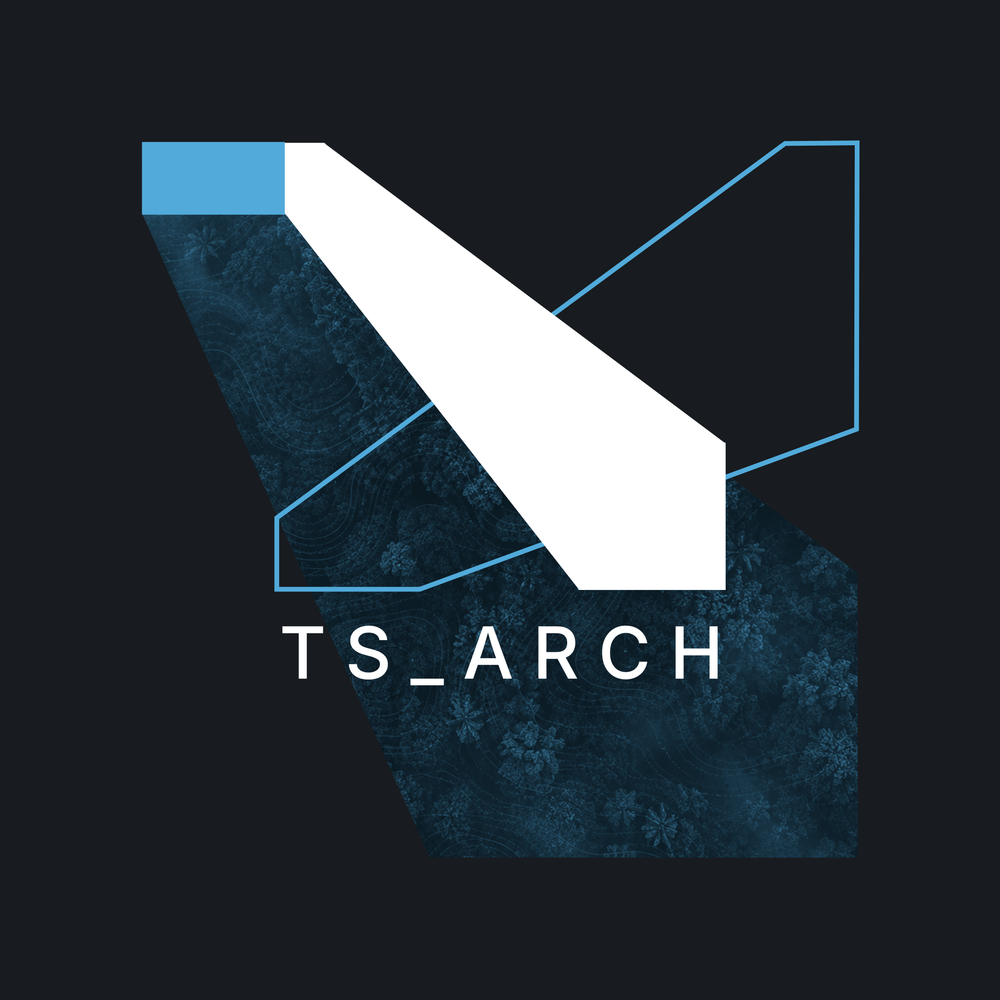

Taller de Comunicación Visual
August Gray Compositions fue fundado en 2019 en la ciudad de Chihuahua en respuesta a una creciente demanda en el mercado local, una ciudad que ha experimentado un notable aumento en el número de egresados en la licenciatura de Arquitectura. Estos nuevos profesionales buscan establecerse y prosperar en un entorno competitivo. Observando esta necesidad, decidimos crear un espacio que ofrezca servicios integrales de comunicación visual y expresión gráfica, específicamente diseñados para ayudar a despachos de arquitectura a proyectar una imagen profesional, coherente y atractiva. Desde nuestra fundación, nos hemos comprometido a brindar soluciones creativas y de alta calidad que impulsen el éxito comercial de nuestros clientes.
Empoderamos a los despachos de arquitectura de Chihuahua mediante servicios integrales de comunicación visual y expresión gráfica de la más alta calidad. Nos especializamos en diseño gráfico y editorial, diseño web, fotografía arquitectónica y visualización arquitectónica, ayudando a nuestros clientes a proyectar una imagen profesional, coherente y atractiva, contribuyendo así a su éxito comercial y posicionamiento en el mercado.
Aspiramos a ser el socio estratégico líder en comunicación visual para despachos de arquitectura en Chihuahua y la región, reconocidos por nuestra innovación, creatividad y compromiso con la excelencia. Queremos ser el referente en servicios de diseño y visualización arquitectónica.
Investigación aplicada orientada al desarrollo de sistemas, productos y escenarios futuros mediante metodologías de economía circular, análisis de recursos, trend forecasting e inteligencia artificial. El enfoque principal no es el resultado final, sino los procesos, datos y estrategias que lo hacen posible.

Proyecto de economía circular aplicado a la apicultura mediante el uso del diagrama mariposa de la Fundación Ellen MacArthur.

Proyecto de predicción de tendencias enfocado en el desarrollo de una paleta cromática automotriz para escenarios futuros hacia 2030.

Investigación enfocada en la visualización y análisis del flujo hídrico dentro del Instituto Superior de Arquitectura y Diseño (ISAD) mediante diagramas Sankey.

Investigación enfocada en encontrar puntos de quiebre utilizando series de tiempo, aplicado a las tendencias de ecotécnia y desarrollo social en la arquitectura de tres regiones: Europa, Asia y Latam.